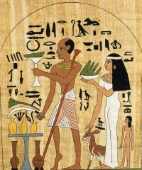

Shogún no sabe de ciencia
Era una mañana calurosa de sábado y Jairo escuchaba la radio mientras los locutores hablaban de varios temas. En un momento le dieron la palabra a un señor que se hacía llamar Maestro Shogún, a quien los locutores consideraban un sabio espiritual.
—En esta época el mundo está mal gracias a la ciencia —afirmó Shogún, después de saludar amablemente a los radioescuchas—. Miren lo que ha traído: la bomba atómica que mató a cientos de inocentes en Japón, la contaminación del aire y de las aguas por las industrias, que está matando a miles. Debemos volver a lo natural —continuó Shogún.
Jairo se quedó pensando lo que el “maestro” Shogún decía. ¿Y si fuera cierto? ¿Es tan mala la ciencia? ¿Se debe a esta los problemas de cambio climático de la actualidad? ¿Estaríamos mejor sin ciencia?
Los pensamientos de Jairo fueron interrumpidos por Shogún, quien para finalizar su presentación invitaba a los oyentes a asistir a su consultorio para ser sanados usando unos cuarzos. Luego Shogún se despidió y llegó una tanda de música.
Luego, en el supermercado, Jairo se encontró a alguien que no veía hace años. Era su maestra de química. No la veía desde hace unos cinco años cuando él estuvo en grado 11. Marta no solo le había enseñado química, también algunos cursos de biología le fueron impartidos por la amable señora.
—Hola profe, ¿se acuerda de mí? —dijo Jairo, mientras se acercaba a Marta por detrás.
Marta dejo de ver la estantería y volteó.
—¿Jairo? —dijo Marta, mientras intentaba recordar.
Después de hablar sobre lo que Jairo había hecho desde que se graduó, y demás chismes, Jairo se acordó de lo que había escuchado en la radio. Una vez agotados los otros temas Jairo dijo:
—Profe, ¿ha escuchado en la radio al maestro Shogún? Es muy famoso. Con frecuencia sale en la radio promocionando cartas astrales y curas con cuarzos.
—Lo escuché una vez pero no me pareció interesante —afirmó Marta.
—Pues en su segmento de hoy afirmó que estaríamos mejor sin la ciencia, y que esta es la causante de la contaminación, el cambio climático, y de la bomba atómica.
La maestra escuchó atentamente a Jairo y luego respondió:
—La ciencia es una herramienta. Y una herramienta muy poderosa. Es igual que un martillo, que puede ser usado para una tarea útil en el hogar o en un taller, o para atacar a alguien. Lo malo no está en la herramienta sino en el uso que se le de. Esto es lo que ha pasado con el desarrollo de armas, como la bomba atómica. Y lo de la contaminación —continuó Marta— es consecuencia de nuestros actos. Es precisamente la ciencia quien nos está advirtiendo de nuestro impacto sobre el planeta.
»Pero eso de que estaríamos mejor sin la ciencia —continuó la maestra— es un disparate. Imagina por un momento que desapareciera todo nuestro conocimiento sobre la electricidad, el cuerpo humano, los microorganismos, las células cancerosas, el magnetismo, etc. ¿Cómo crees que estaríamos? Ahora imagina que desaparecieran también los logros de la tecnología: la telefonía celular, los computadores, la internet, los aviones, las vacunas, radiografías, antibióticos, los fertilizantes para los cultivos, y la refrigeración. ¿Cómo crees que estaría la sociedad? Piensa en ello –sugirió Marta— y tendrás la respuesta.
Ya en su casa, Jairo, quien contaba con algo de tiempo libre, decidió hacerle caso a su ex profesora. Pensaría un poco más sobre cómo estaría la sociedad sin la ciencia.
“Siempre es bueno analizar las cosas con cabeza fría, y no creerse todo lo que sale en los medios de comunicación”, pensó Jairo para sus adentros.
Jairo decidió consultar en la internet. Por ejemplo, en tiempos de Cristóbal Colón el viaje desde la península ibérica hasta América le tomó 71 días. Además que ese par de meses de travesía fueron muy arduos y penosos para los navegantes. Hoy en día, el viaje no toma más de 9 horas en un avión jumbo, y claro está que es mucho más cómodo.
Y ni que decir de las comunicaciones. Hoy en día se puede tener una vídeo conferencia en tiempo real, sin importar que las dos personas estén, cada una, en lados opuestos del globo terráqueo. Audio y video en tiempo real. “Shogún sí es idiota”, pensó Jairo. “¿Cómo se comunica él con sus potenciales clientes, si no es haciendo uso de la radio y su página de internet? ¿Por qué no usa entonces su bola de cristal, para comunicarse con la gente para que sea acorde con su idea de que estaríamos mejor sin ciencia?”
Jairo también recordó que en su carné de vacunación aparecía el registro de las vacunas que había recibido: BCG, polio, DTP, trivalente viral, entre otras. Por ejemplo la vacuna contra la poliomielitis le salvó de una enfermedad muy grave.

La poliomielitis es una enfermedad causada por un virus que inflama las neuronas motoras de la médula espinal y el cerebro. Muchos de los enfermos terminaban paralíticos, con sus piernas totalmente inutilizadas. Los casos de personas lisiadas a causa de la polio eran comunes en el pasado. Incluso los antiguos egipcios dejaron dibujos de personas lisiadas por la poliomielitis. Pero desde que existe la vacunación muchas personas se han salvado. Desde el año de 1954 se empezó a aplicar una vacuna segura, y muchísimas personas están a salvo.
Otra terrible enfermedad que fue erradicada gracias a la vacunación fue la viruela. Esta enfermedad, también causada por un virus, generaba en muchos casos desfiguración del rostro a causa de los abultamientos en la cara y el cuerpo.
En el pasado muchas poblaciones eran arrasadas por la enfermedad. La tasa de mortalidad llegó a ser hasta del 30%, es decir 30 de cada 100 infectados morían inevitablemente.
¿Podría el maestro Shogún curar o prevenir la viruela con sus cuarzos? ¡De seguro que no! En el pasado también muchos egipcios e hindúes recurrieron a rezos a sus dioses, y otras supersticiones, suplicando sanación, pero el virus siguió vivo. Sólo hasta que al vacunarse a toda la población en la segunda mitad del siglo XX se pudo acabar con la enfermedad. ¿Te dice esto algo sobre la importancia de la ciencia?
Muchas personas que en tiempos de Colón tendrían una muerte segura hoy pueden vivir gracias a los antibióticos, que matan a letales bacterias; o gracias a trasplantes de órganos como el corazón, páncreas, riñones, entre otros. Incluso la ciencia médica ha podido operar a niños recién nacidos y bebes en el útero materno.
Ya terminando su búsqueda Jairo se encontró con una frase del astrónomo Carl Sagan, quien escribió muchos libros para que la gente comprenda la ciencia y piense críticamente. La frase de Sagan decía:
“No hay ninguna especie en la Tierra que haga ciencia, Hasta ahora es una invención totalmente humana, que evolucionó por selección natural en la corteza cerebral por una sola razón: Porque funcionaba… No es perfecta. Puede abusarse de ella. Es sólo una herramienta, pero es con mucho la mejor herramienta de que disponemos, que se autocorrige, que sigue funcionando, que se aplica a todo. Tiene dos reglas. Primera: No hay verdades sagradas; todas las suposiciones se han de examinar críticamente; los argumentos de autoridad carecen de valor. Segunda: Hay que descartar o revisar todo lo que no cuadre con los hechos.”
Jairo se quedó pensando. “La ciencia es una herramienta muy útil”, se dijo. “Lástima que muchas personas no la entienden, y peor aún, que otras la consideran nociva. Lo que es nocivo es que las personas confíen su salud y su dinero a personas como el maestro Shogún, que se valen de la ingenuidad, y las necesidades de la gente. Ojalá más personas se interesaran por aprender las ciencias naturales.”
Material creado con fines educativos en la apertura de la clase de Ciencias Naturales y educación ambiental del Colegio Instituto Técnico Laureano Gómez, por Ferney Yesyd Rodríguez Vargas.
Volver a la sección Escepticismo
Comentarios
Comments powered by Disqus